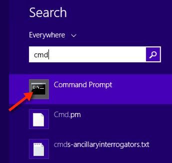

by Quazi Nafiul Islam
@gamesbrainiac on Twitter
This document provides instructions for setting up your Python environment for your respective Operating System. If you need help regarding this, please send me a tweet @gamesbrainiac on twitter. However, before doing so, please read this article.
Make sure to read the last part of this document, called "TEST"
Mac already has Python installed, but its the wrong version. We are going to be using the latest version of the language, 3.4.1. So, we are going to use a special tool called pyenv. We can install it using Homebrew, which is a package manager for MAC OS. If you do not have any other package manager installed, namely Finks or Macports, then please install Homebrew by pasting the following in the Terminal and hitting ENTER:
ruby -e "$(curl -fsSL https://raw.github.com/Homebrew/homebrew/go/install)"Now, restart your terminal, and type in the following:
brew install pyenvOnce that is done, just type the following into your terminal:
echo "eval \"$(pyenv init -)\"" >> ~/.bashrcNote, that if you use zsh, then .zshrc
Restart your terminal and now, you should be able to get pyenv available as one of your Terminal commands. Then simply install the version of Python that we need (this might take quite some time):
pyenv install 3.4.1After doing this, set your global python to 3.4.1 by doing the following:
pyenv global 3.4.1Now you're all set.
bpythonpyenv takes care of a lot of the problems associated with managing python installations. You can easily install packages for a particular version of python with ease. All you have to do now is:
pip install bpythonAnd then:
pip install curtsiesAnd then:
pip install urwidAfter that is done, you can invoke your special interpreter, bpython using bpython in your command line. This is a screen shot of what it should look like (your colorscheme might be different, but the screen shot should look familiar):
In order to get our software running, we will need a couple of things, so just paste this into your Terminal and hit ENTER (this might take some time):
sudo apt-get install -y make build-essential libssl-dev zlib1g-dev libbz2-dev \
libreadline-dev libsqlite3-dev wget curl llvmIf you're using Redhat/Fedora:
yum install zlib-devel bzip2 bzip2-devel readline-devel sqlite sqlite-develSince we're using sudo, the Terminal will prompt you for your password.
You will need pyenv because most distributions of Linux (be it Fedora or Debian/Ubuntu or Arch) come with their own version of Python. In short you do not want to mess with that installation of Python since a lot of your applications depends on it functioning properly.
Also, it might not be the right version, in most cases Python 2 is installed. So, we will install pyenvusing the following script:
curl -L https://raw.githubusercontent.com/yyuu/pyenv-installer/master/bin/pyenv-installer | bashThis should install pyenv for you. Now just append the following lines to your ~/.bashrc or if you use zsh your ~/.zshrc:
export PATH="$HOME/.pyenv/bin:$PATH"
eval "$(pyenv init -)"Now that pyenv is installed, lets install the latest version of python (this might take quite some time):
pyenv install 3.4.1Now, all you have to do is set Python 3.4.1 as your default interpreter:
pyenv global 3.4.1bpythonpip install bpythonAnd then:
pip install curtsiesAnd then:
pip install urwidIf the above ran without a hitch, then you're all set. Just restart your Terminal, and now you can open up bpython typing in bpython in the Terminal.
Linux distros have a lot of platform specific problems. So, if things don't work out for you, you are going to have to use the bundled python that comes with your distribution. You can still use pip to do a pip install bpython, so make sure you do that.
If you already have a version of Python installed, and its not Python 3, then you're in trouble. But before addressing that problem, we will first need to install the latest version of Python.
What you need to determine first is what architecture your OS runs on, whether its 32bit or x86 or 64bit or x64. Here are the steps:
If the highlighted region says 32 then use this installer. Otherwise, use this installer for 64 bit.
If you have installed things correctly, then you should be able to see a python prompt when you run python in the command line:

Now, if you have installed an another version of Python, then you need to change into the directory of C:\Python34, through:
cd C:\Python34Now type in python.exe into the command line:
python.exeYou should be able a python interpreter prompt like the one in the picture above. Exit the prompt.
bpythonThis is where things become problematic for people who have another version of Python installed. If you don't have another version of python installed, don't worry about anything. So, firstly in order to install bpython, you will need to install a library called curses, from this:
Restart your command prompt, and install bpython:
pip install bpythonHowever, if you do have another version, then you are going to have to change your directory to C:\Python34\Scripts, and then run:
pip.exe install bpythonAfter this is complete, there should be a bpython.exe in the directory that you are currently in. Invoke it from the command line by bpython.exe.
Launch bpython. Then type in import this into the prompt and hit ENTER.
Which line do you like the best and why? Reply to gamesbrainiac@gmail.com, with your name and ID and what kind of machine you installed python and bpython on.